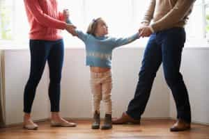
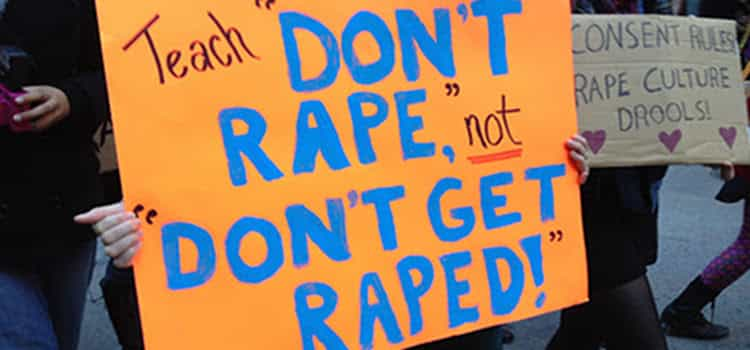
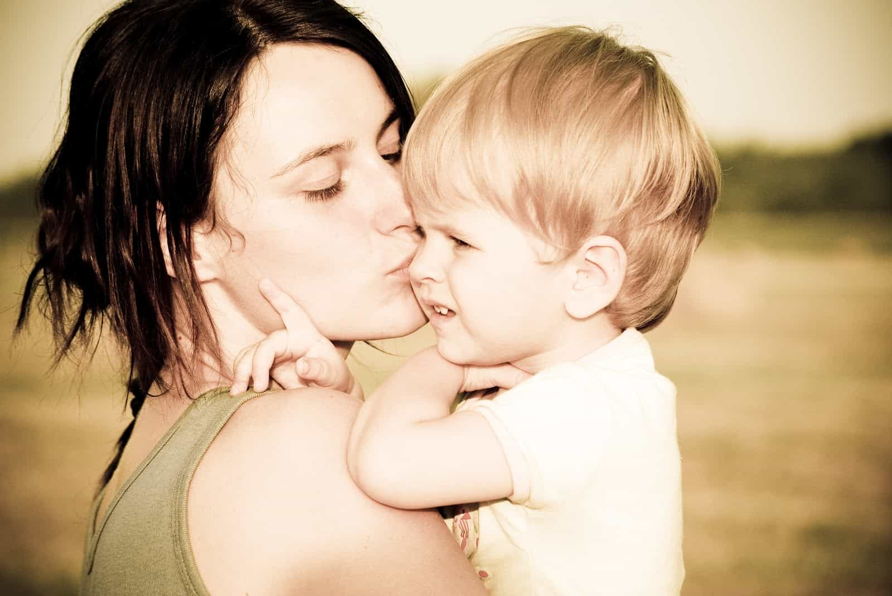

< < < Back
Single Motherhood Causes More Sexual Violence Than A Mythical “Rape Culture” – Return Of Kings
In 2017, mothers are often venerated as faultless parents, irrespective of the way many of them screw up their kids’ lives. Yet they are only held responsible for the
The general, if not constant rule of thumb is this: achievements and moral character can be attributed to mothers, whereas violence, particularly violence against women, can be blamed on many millions of male strangers. You could be living in a shack in rural Alaska and you are still considered more responsible for a man in Miami raping a girl than the woman who conceived him, gave birth to him, taught him how to speak, and generally raised him until he was 18 years old (or even older).
If we take America as our starting point, 99.999% of men have never met a particular rapist or have had nothing but insignificant interactions with him. With 160 million males living in the United States, it is fair to say that a convicted rapist has only formed quasi-meaningful relations with about 0.001% of other American males, or 1,600 individuals, throughout his entire lifetime. Even the vast majority of these 1,600 men do not know him intimately (far from it) and have next to no major influence on how he behaves.
And then there’s “Dunbar’s number,” the proposition that human beings can only cultivate stable social relationships with around 150 people, male or female, at any given time. For an average man, that leaves about 75-100 fellow men who can reasonably have a longer-term impact on his actions. Again, most of these people are not overly intimate with the man in question. If anything, only 10-20 of these 150 people can be considered very close to him, a group which in most cases includes his mother and father.
If mothers are not at least partially responsible for a child’s bad or criminal behavior, why are they allowed to look after them?

She gets the plaudits if the child succeeds, but if it goes to jail, blame someone else.
We live in a very strange world indeed. On the one hand, judges award mothers primary custody in between 68 and 88% of cases involving relationship breakdowns that reach the court system. One would think that this is because mothers actually have an ability to affect their child’s development for better or worse, to the point where the father is given only minimal, every second weekend-style contact. It certainly reflects the widely-held social belief that women are more pivotal in the emotional development of their son or daughter.
But whenever the specter of criminal behavior comes up, most notably rape, responsibility that might normally flow to a mother’s parenting can be conveniently offloaded onto the cab driver in Chicago, the window-washer in Seattle, or the policeman in small-town Maine, none of whom will ever meet her son. If this is how society approaches the causal factors of rape, motherhood has to be the most impotent biological and social construct known to humankind. Another male 2,451 miles away in Los Angeles (or 3,470 miles away in London) apparently has more sway over a rapist in New York City he does not know than the rapist’s own mother. What gives?
Single motherhood explains rape much better than “blame all men”
Yes, blame all men if this kid sexually assaults a woman in the future, but the mother did her best!
Anyone with a rudimentary understanding of the natural sciences or some more objectively based social sciences, such as economics, is familiar with the idea that correlation is not causation. For instance, if you get a headache every day the LA Dodgers play, it does not mean that the Dodgers team or individual players caused your head to hurt.
Sadly, notions of causation and even correlation have been severely butchered by feminist sociological tropes such as “rape culture.” If we believe SJWs, Man A wolf-whistles at a hot girl and supposedly this is a partial cause behind Man B raping a girl, even if Man B doesn’t know Man A and wasn’t there when the wolf-whistling happened. Correlation is routinely lacking in these circumstances, let alone the much higher threshold of causation.
But when it comes to trends such as single motherhood or maladjusted mothers, it is easier to observe an actual causal link with criminal behavior. Surprisingly, the notoriously leftist publication Slate once cited a study by Princeton’s Sara McLanahan. In assessing the trajectories of sons raised by single mothers, McLanahan found a massive spike in male incarceration rates compared to sons raised by both biological parents. Even when factors such as poverty, educational standards, and race are taken into consideration, single mothers are still more likely to raise children who become delinquent, criminally-inclined adults.
I am not defending fathers who abandon or neglect their children. Nonetheless, we know for a fact that crime, including violent crime, declines among children growing up in two-parent households, regardless of issues like income, ethnicity, or whether each parent finished high school or attended college. We have zero evidence that a complete stranger is responsible for another man’s rape of a woman and a treasure trove of evidence that the conditions in which a mother raises her son impacts on the likelihood of him committing a violent crime like rape in the future.
Sisters, female cousins, girlfriends and female friends are also more responsible for what their brothers, male cousins, boyfriends and male friends do than complete strangers

“If a man I know rapes, every other man in America is responsible, but not me, his best friend since grade school.”
Why should we limit ourselves to mothers? The ability of a sister, female cousin, girlfriend or female friend to shape someone’s behavior is also much greater than a random man on the street. If we took feminists at their word and adopted the principle of collective responsibility for rape, the only collective responsibility that makes sense is the responsibility of those men and women who actually know the rapist and have decided to spend their time with him. A man who lives on the west coast simply has no opportunity to prevent a rape on the east coast, or even one three blocks from him. But the female best friend or sister, in contact with the rapist almost every day, theoretically does.
Every time a feminist accuses you of some mystical responsibility for a stranger’s rape via “rape culture,” your instinctive response should be that his parents, his mother most of all, should have raised the rapist better. And after that, individuals such as his sisters, female cousins, girlfriend (provided she was not the victim), and female friends are the next people who should have their collective responsibility assessed. If you do not know the man, how could you have possibly done anything to stop the commission of a crime?
“What about personal responsibility, David?”

Some readers will find the feminist claim of collective male responsibility for rape disgusting but still think I am absolving rapists of their own personal responsibility for their actions. “Many and even most mothers cannot be blamed for what their sons do!” is something I would expect to hear. And I agree with that sentiment. Rapists should be held accountable and jailed for years for what they do, provided convictions are secured through hard evidence and not hearsay accepted by kangaroo courts. There are plenty of mothers out there with criminal sons who did their best and are plainly not at fault.
But if society is going to collectively blame all men for someone raping, we need to devote 1,000 times more attention to the potential collective responsibility of his family and social circle, including and particularly his mother. Aside from crackpot explanations based on male-only telepathy, subterranean patriarchal conspiracies, and other feminist circle-jerks, the mantra of collective male responsibility for rape is the most unsupported criminal justice theory in human history. It belongs nowhere but in the academic and scientific trash bin.
Read More: Most Female Leaders Are Only Successful Because Of Their Male Relatives